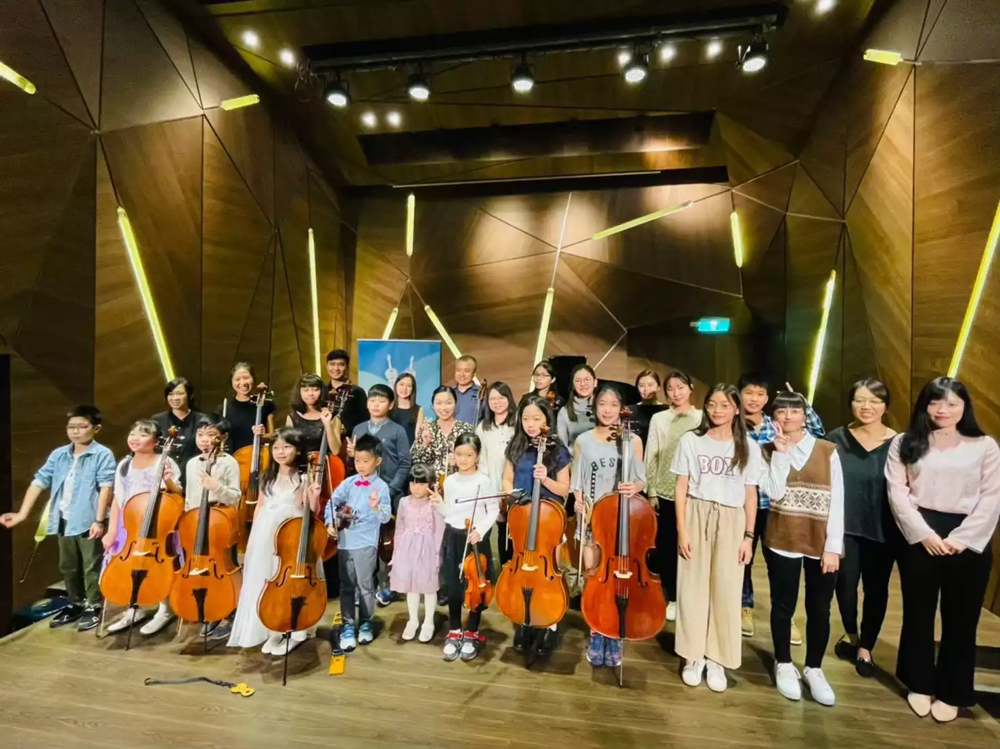
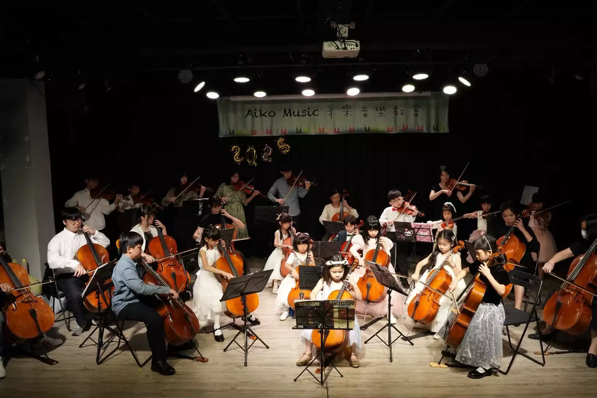
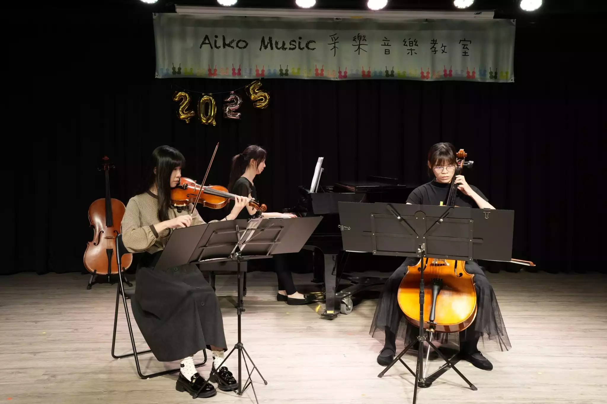

Our Professional Instructors
音樂的學習，是一場漫長而美好的旅程。在這條路上，有時會因為突破不了的技巧而感到氣餒，有時會因為看不懂繁雜的樂譜而想放棄。這時候，除了勤奮的練習，更需要一位願意耐心傾聽、懂你瓶頸的引路人。
對於**家長**來說，我們明白您期盼的，不只是孩子能彈奏出一首完美的曲子，更是希望他們在學習過程中，培養出克服困難的毅力，並在音樂中找到自信與快樂。對於**成人**學員，我們更懂您重拾夢想的渴望與初學的忐忑，我們的老師會將複雜的樂理化為簡單的語言，陪伴您毫無壓力地享受下班後的舒壓時光。
在采樂，每一位老師都擁有紮實的專業背景，但我們最引以為傲的，是那份「用生命影響生命」的教學熱忱。我們準備好了，隨時歡迎你加入這個溫暖的音樂大家庭！
兼具深厚學養與教學熱忱，致力於激發每一位學生的藝術潛能。
致力於國內外劇場鋼琴合作演出及鋼琴教學，並深耕兒童與成人的藝術潛能開發領域。任教至今已具備超過十年之教學經驗，擅長以鼓勵與引導的方式，讓學生在充滿安全感的環境中愛上音樂。
采樂擁有陣容堅強的弦樂指導團隊（包含大提琴、中提琴、小提琴專任教師）。老師們皆畢業於國內外知名音樂系所，具備豐富的交響樂團演出與獨奏經驗。

采樂的老師們堅信，學習音樂最好的成果展現，就是勇敢地站上舞台。我們從 2018 年起持續舉辦年度師生音樂會，甚至已開始籌備 2025 年的年度盛典！
每一次的登台前，老師們會陪著學生克服緊張、反覆雕琢細節。當聚光燈打在學生身上，台下響起如雷的掌聲時，那份油然而生的自信與成就感，是我們給學生最珍貴的禮物。
